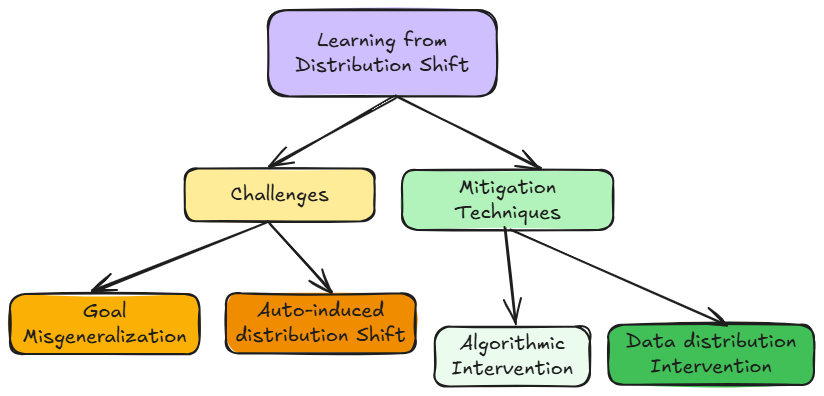

Part 2 of Navigating the Landscape of AI Alignment
Navigating the Landscape of AI Alignment, Part 2
A bird’s eye view of the field of AI Alignment, its components and techniques
Welcome to Part 2 of the blog post series “Navigating the AI Alignment Landscape”. In the first part, we discussed the importance of AI alignment, its components and the risks of misalignment, followed by a breakdown of one of the techniques to mitigate it, “Learning from feedback”, a forward alignment (i.e. alignment training) technique. This post will look at the second family of techniques within forward alignment named “Learning from Distributional Shift”.
The paper “AI Alignment: A Comprehensive Survey” (by researchers at Peking University, Cambridge, CMU, Hong Kong University, and USC) was the main reference for this blog post series.
Learning from Distributional Shift

To ensure the reliability of an AI system, it must be able to adapt to various data distributions that differ from its training distribution. However, this is not always the case. AI systems that perform well within their training distribution may not maintain this alignment when faced with deployment or testing distributions, potentially leading to significant misalignment issues after deployment. This difference between the training and test distribution/environment is referred to as distribution shift.
Note that in this case, the focus is not only on the generalization capabilities of models, but rather the generalization of alignment objectives across different distributions (i.e the model behaving in an aligned manner in both training and test). This brings us to the challenges posed by distributional shifts:
1. Goal Misgeneralization: AI systems may perform flawlessly within their training distribution, but the skills they develop may not generalize effectively in out-of-distribution (OOD) deployments. This can result in AI pursuing goals that do not align with human intentions, often due to reliance on spurious correlations or shortcut features.
2. Auto-Induced Distribution Shift (ADS): During training, attention is often placed on the strengths and weaknesses of the agents themselves, leading to an oversight of the impact these agents have on their environments. In practice, agents can influence the environment during decision-making and execution, thereby altering the data distribution generated by the environment.
Mitigation Techniques
There are two categories of techniques that can be used to mitigate misalignment issues caused by distribution shift:
Algorithmic Interventions: Modify the optimization objective of the model, enabling it to learn from different distributions.
Data Distribution Interventions: Modify the input data distribution fed to the model to make it more robust.
Algorithmic Interventions
Within this class of techniques, the optimization objective is modified to use learning information from different distributions during training. Again, there are two sub-categories within this technique:
1) Cross-distribution aggregation and 2) Connectivity-based fine-tuning
Cross-distribution aggregation
One of the main problems that occurs as a result of the distribution shift is the risk of the model learning spurious correlations, which are distinct from the core objectives. The following is an example of a spurious correlation:
You are training a driving assistant model to detect stop signs in various conditions. If most of the training images of stop signs in snowy conditions also have speed limit signs nearby (because many snowy stop sign images were collected from urban areas), the model might learn a spurious correlation: "A stop sign is more likely when there’s snow and a speed limit sign in the scene." Now, if this model is deployed in a new location where stop signs appear without snow or nearby speed limit signs, its detection accuracy could drop. Worse, it might fail to detect stop signs in sunny conditions because it relied on the wrong features.
One way to mitigate this is to modify the optimization objective in such a way that it integrates learning information from different data distributions. This allows the model to learn truthful and invariant relationships. The idea behind cross-distribution aggregation is based on the concept of Empirical Risk Minimization (ERM), which is a statistical method used to minimize the bias between the training data distribution and real-world target distribution.
Empirical Risk Mimization (ERM)
ERM is a method for selecting a model that minimizes the average error over a training set. This average error is known as the "risk," and since it is an estimate of the true risk (the risk associated with the unknown target distribution), it is referred to as empirical risk. The goal of ERM is to find the model that minimizes this empirical risk. Naturally, the larger the training set, the more representative it is of the true distribution, increasing the likelihood that the empirical risk approximates the true risk more accurately.
However, a major drawback of naive ERM is that it can lead to severe overfitting on the training distribution. To mitigate this, regularization techniques are commonly used. Additionally, ERM struggles when there is a significant discrepancy between the training distribution and the target distribution. In such cases, Distributionally Robust Optimization (DRO) is a more effective approach. For a deeper understanding of ERM, refer to the paper as well as this very well-explained lesson on the concept.
Distributionally Robust Optimization (DRO)
While ERM tries to minimize the empirical risk, i.e average training error over the distribution, DRO instead tries to optimize the worst-case subpopulation loss around the distribution. It achieves this by creating perturbation sets (adding noise) to the original training distribution and tries to minimize the risk on these perturbation sets. This allows the model to learn invariant relationships from a mixture of different domain training distributions. However, again using DRO without regularization can be detrimental to performance and result in overfitting.
DRO assumes that data might come from a range of related distributions, and it optimizes for the worst-case distribution shift. This is a very superficial and introductory explanation of the topic. If you want to understand DRO in detail, read the paper and listen to this excellent lecture on Google's Tech Talks channel.
Invariant Risk Minimization (IRM)
While the above two methods focus on minimizing the average and worst-case risk, IRM seeks to find a representation of the data where the optimal classifier is the same across all training environments. This helps the model learn causal features rather than spurious ones. Let's see this with an example:
Imagine you want to predict whether a person is healthy (Y) based on their lifestyle habits (X). You collect data from different cities (E1, E2, etc.).
In City A, most people who go to the gym also drink smoothies.
In City B, many unhealthy people drink smoothies but don’t exercise.
In City C, there are fewer smoothie drinkers, but gym-goers are still mostly healthy.
If we train a standard machine learning model on data from City A and City B, it might learn that drinking smoothies is a strong predictor of health. However, this is a spurious correlation—smoothies are correlated with health only in some environments. IRM tries to learn a model that performs well across all cities by focusing on invariant features, i.e., those that consistently explain health across all environments. Instead of relying on the spurious correlation (smoothies), IRM encourages the model to find the actual causal factor: exercising.
IRM is the extension of the ICP (Invariant Causal Predictor) to high-dimensional input data with several variables that may lack clear causal significance. In this case, the job is to select functions with strong performance across all environments instead of a specific environment. For more info on IRM, read the paper and this excellent tutorial.
Risk Extrapolation
Risk Extrapolation (REx) is a learning framework designed to improve out-of-distribution (OOD) generalization by extrapolating risk beyond the training environments. Instead of just averaging risk across environments, REx minimizes the maximum deviation in risk across environments, forcing the model to perform similarly across all training environments.
Navigation via mode connectivity
Mode connectivity is a phenomenon where one can identify a simple, low-loss path within the loss function space that connects two or more distinct local minima (or modes) of a neural network's loss landscape. Neural networks often converge to different local minima that do not generalize well. Instead of naively interpolating between them, which often leads to high-loss regions, mode connectivity finds a curved, low-loss path that enables smooth transitions between models without degrading performance.
Mechanistic Similarity and the Limits of Fine-Tuning
We can define models as mechanistically similar if they employ the same internal attributes or reasoning pathways to process inputs. When models are trained on similar data, they often converge to such shared mechanisms due to having a common loss objective.
However, the absence of linear connectivity between two models typically implies mechanistic dissimilarity, meaning the models are using different internal representations or shortcuts to solve the same task. In such cases, simple fine-tuning is insufficient, especially when the pre-trained model has learned to rely on spurious correlations in the data.
Connectivity-Based Fine-Tuning (CBFT)
Connectivity-Based Fine-Tuning (CBFT) is a recently proposed method to address the limitations of standard fine-tuning by leveraging insights from mode connectivity. It reframes fine-tuning as a process of relocating the model to a more robust and invariant region in the loss landscape.
CBFT has two primary objectives:
Breaking Linear Connectivity (Maximizing Barrier Loss)
The first goal is to modify the model’s underlying mechanism by repositioning it within the loss landscape so that it is no longer linearly connected to the original pre-trained minimum. This is achieved by maximizing the barrier loss, which encourages the model to leave behind any easily traversable, mechanistically similar pathways and seek out functionally distinct solutions.Removing Spurious Correlations (Minimizing Invariance Loss)
The second goal is to reduce the model's dependence on spurious features learned during pre-training. This is done by minimizing the invariance loss, which guides the model to discover more causally invariant relationships in the data, without requiring explicit access to the spurious variables themselves.
Together, these objectives allow CBFT to produce models that are robust but also mechanistically different in a meaningful way, offering a principled route to overcoming shortcut learning and improving generalization. Read the original paper here.
Data distribution interventions
In the previous methods, the optimization objective/algorithm was modified to be able to incorporate different data from different domains into its learning process. In this section, we will discuss the various techniques of expanding the input data distribution to the model, which will reduce the discrepancy between the training and the real-world distribution.
Adversarial training
Adversarial training is the process of introducing adversarial samples (i.e samples that can fool/misalign the model) into the training distribution of a model. This improves the robustness of the model towards such adversarial samples at test/inference time. There are two types of adversarial training: perturbation-based and unrestricted.
1. Perturbation-based adversarial training: Introduces adversarially perturbated samples into training. Perturbation is a process of corrupting a data point by adding a small amount of noise to it.
2. Unrestricted adversarial training: Generalizes perturbation-based adversarial training to include any adversarial sample that can fool the model, not necessarily ones that are created by adding a small amount of noise to another sample, i.e perturbation. This includes generating adversarial samples from scratch using a model like a Generative Adversarial Network (GAN).
Cooperative training
Cooperative AI aims to address collectively harmful behaviors of AI systems. Within this technique, the data simulated from several agents is used to expand the training data distribution, allowing the model to familiarize itself with various kinds of samples/behavior from other agents in the environment. This is also a manifestation of a specific form of Multi-agent reinforcement learning. Multi-agent RL, which emphasizes the AI system's capability for coordination, is divided into three branches:
a. Fully cooperative: shared reward function for all agents. Disregard the issue of cooperation incentives since they are perfectly aligned. Focus on effectively achieving the shared goal via coordination
b. Mixed motive settings: Mixture of cooperative and competitive incentives - rewards for agents are not identical, but not zero-sum either. eg, game environments where teams play against each other, negotiation, etc
c. Fully competitive: This is a typical zero-sum game environment like MiniMax, where if one agent’s reward is minimized by maximizing the other agent’s reward.
Other settings of MARL include:
Zero-shot coordination: Making AI systems able to coordinate effectively with other agents without requiring to be trained together or otherwise being designed to coordinate with agents, ad-hoc coordination, other play, off-belief learning, etc.
Environmental building: Using simulation and game environments
Socially realistic settings: Building more realistic and open-ended environments to allow agents to communicate in a way similar to humans.
And that's it! In the next post, we will cover backward alignment/alignment refinement in detail. Until then, you can go through some of my previous posts on alignment. Stay tuned!
Originally published on Mind & AI on Substack.